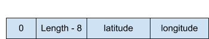

Shabak Challenge 2018 Write-up
The challenge starts here. The link takes us to the first challenge, which I would say is more of a riddle as it is not technical at all. Then we have four subjects to choose from: hardware, signal processing, embedded software, and software & data science. In my point of view, the most interesting subject is the Embedded software which we will cover in this article. I took a quick look at the other subjects: hardware and signal processing are not in my expertise. I started the software and data science challenge, but it was less attractive, so I won’t cover it in this article.
Start
The first part is not technological at all. We get a link to Google maps, with a route going through 6 locations. If we take a close look at each location, we can spot a letter, creating a 6-character string.
Embedded Software
Stage 1
A routine counter-surveillance check of a senior Minister of Defense's
vehicle revealed an electronic device in the undercarriage.
We suspected it was a tracking device, and sent it to the
Technological Department for an in-depth analysis.
After reverse-engineering the product, the following information was uncovered:
- A partial scheme of the electrical circuit and its components (see the attached electronic_scheme.pdf file).
- A disassembly of the code programmed to the micro controller (see the attached program.c file).
- The memory dump of the external memory component (see attached external_mem_dump.bin file).
Earlier that week, we had intercepted a suspicious SMS sent by a suspected
member of White September. The suspect's message read "package received".
The message was received on 30/10/18, at 01:21 AM UTC.
Our analysis team analyzed the data and determined that the message had most likely
been sent by the same WS member who had installed the device in the senior official's vehicle.
The analysts suspect he retrieved it from a WS dead drop.
Our engineers believe that when the message was sent, the device was online,
and that therefore the location of the dead drop could potentially be extracted from it.
Your mission:
Find the exact coordinates of the dead drop.In essence, we had 3 files (an electronic circuit scheme, a C file, and a memory dump) and we need to extract from the memory dump a location at a specific time. The first file is a PDF with a scheme of the electrical circuit:
We can see it has 4 components: Microcontroller unit (MCU), a memory component, GPS antenna module, and accelerometer. The second file is a memory dump (bin file), opening it with Hexedit doesn’t reveal anything interesting. The third file is a C source code, containing: formatting functions, interrupt handlers, global variables, and the primary loop function.
Parsing memory dump
The first step is to understand the data in the memory dump. There are two places in the code that write data to memory:
-
The main function:
save_length = format_save(temp_buffer, (a == TRUE) ? 0 : 1, formatted_length, save_buffer); save_to_flash(save_buffer, save_length); -
Interrupt handler:
length = format_save(temp_buffer, a, 0, interrupt_buffer); save_to_flash(interrupt_buffer, length);
Before writing data to the flash memory (save_to_flash), the data is formatted by the format_save function:
static uint32_t format_save(uint8_t *in_buffer, uint8_t a, uint32_t length, uint8_t *out_buffer)
{
*out_buffer = a;
*(uint32_t *)&out_buffer[1] = length;
memcpy(&out_buffer[5], in_buffer, length);
return length + 5;
}The function formats the data with the following structure:
The interrupt handler writes an empty in_buffer; Therefore we’ll focus on the main function:
while (1)
{
formatted_length = 0;
size = uart_read(recv_buffer);
if (size > 0)
{
res = parse(recv_buffer, size, parsed_buffers);
if (reset == TRUE)
{
if(res != PARSER_TYPE_2) continue;
formatted_length = format1(parsed_buffers, temp_buffer);
reset = FALSE;
a = TRUE;
}
else if (should_save == TRUE)
{
if(res != PARSER_TYPE_1) continue;
formatted_length = format2(&parsed_buffers[1], temp_buffer);
should_save = FALSE;
a = FALSE;
}
if(formatted_length > 0)
{
save_length = format_save(temp_buffer, (a == TRUE) ? 0 : 1, formatted_length, save_buffer);
save_to_flash(save_buffer, save_length);
}
}
}
First, there is the parse function which processes the data from the GPS component and determines its format. The GPS data can be in one of two formats: GPGGA or GPRMC (both are GPS location protocols). Then, the relevant format function is called:
format1() - parses GPRMC data on device startup. Magic ‘a’ is 0.
format2() - parses GPGGA data when should_save flag is TRUE (will be explained later). Magic ‘a’ is 1.
The buffer passed to the format functions is the GPS data in the form of a string array.
GPRMC example
static uint32_t format1(uint8_t **in_buffer, uint8_t *out_buffer)
{
*(int *)out_buffer = atoi(in_buffer[0]);
out_buffer += sizeof(float);
*(int *)out_buffer = atoi(in_buffer[8]);
return 2 * sizeof(float);
}
The function extracts two elements and copies them into out_buffer
0 - Time stamp 220516 -> 22:05:16
8 - Date stamp 130694 -> 13/06/94
GPGGA example
static uint32_t format2(uint8_t **in_buffers, uint8_t *out_buffer)
{
char val1_str[10] = { 0 };
for (uint8_t i = 0; i < 3; i += 2)
{
memset(val1_str, 0, sizeof(val1_str));
uint8_t *pos = strchr(in_buffers[i], '.');
memcpy(val1_str, in_buffers[i], pos - in_buffers[i] - 2);
uint16_t val1 = atoi(val1_str);
float val2 = atof(pos - 2);
float res = val1 + (val2 / 60);
if (*in_buffers[i + 1] == 'W' || *in_buffers[i + 1] == 'S')
res *= -1;
*(float *)out_buffer = res;
out_buffer += sizeof(float);
}
return 2 * sizeof(float);
}
The function extracts two elements and copies them into out_buffer
1 - Latitude 4807.0388 -> 48 + (07.0388 / 60) = +/- 48.1231°
3 - Longitude 01131.0000 -> 11 + (31.0 / 60) = +/- 11.516667°
Let’s go over what is written to the memory. On device reset, GPRMC is written:
By default, GPGGA is written:
Upon interrupt:

Now that we understand the structure of the memory dump, we can parse it. Trying to parse the bin file, I found that one of the entries is corrupted, as my program had an exception and couldn’t read the whole file. A small fix and I had the whole bin file parsed.
RESET: 125000 281018
INTERRUPT
DATA: 32.005531311035156 34.88541030883789
DATA: 32.0051383972168 34.88481903076172
DATA: 32.005348205566406 34.883880615234375
DATA: 32.00600814819336 34.882850646972656
Now we need to find the coordinates at the required time (01:21 AM, October 30th) but all we have are two resets with time stamps. The question is how to figure out when the coordinates were written.
Figuring out entry timestamps
First, I thought to divide the number of entries between resets by the time difference between resets, to get the average time between entries. That way I calculated the time for each entry and tried to enter the entry at the required time as an answer, but it didn’t work. Next on I moved to look at the interrupts handler which also writes to memory:
ISR(INT2_vect)
{
static uint8_t interrupt_buffer[MAX_SAVE_BUFFER_SIZE];
uint8_t *temp_buffer;
uint8_t a;
uint32_t length;
if (PIND & 0x01)
{
is_triggered = TRUE;
a = 2;
}
else
{
is_triggered = FALSE;
a = 3;
}
length = format_save(temp_buffer, a, 0, interrupt_buffer);
save_to_flash(interrupt_buffer, length);
}I figured out that each interrupt defines whether the device is “triggered" or not. The interrupt handler also sets the value of a magic variable ‘a’; its possible values are 0 (reset), 1 (coordinates), 2 (triggered), 3 (untriggered).
To understand when data is written to the memory, I had to do figure out when should_save is TRUE. Some more digging in the code brought me to the next interrupt handler:
ISR(TIMER1_COMPA_vect)
{
if (++counter == counter_max_val)
{
should_save = TRUE;
counter = 0;
counter_max_val = (is_triggered == TRUE) ? 15 : 150;
}
}This handler increments a counter until it gets to counter_max_val. When the counter gets to the max value, an entry is written to the memory. The max value can be 15, 150 or 75 which is the default value after a reset. Now that we know the proportions between entries according to triggers, we can try again and calculate the time of each entry similarly to the previous attempt. It also didn’t work. I then thought maybe each counter increment is 1 second, so entry writing will happen every 15, 150 or 75 seconds. I parsed the bin file again, but none of the timestamps fit our target. Now I have nowhere to hide from the mighty MCU; It’s time to open its datasheet. The interrupt is created by a timer with the following configuration:
static void configure1(void)
{
cli();
should_save = FALSE;
counter = 0;
TCCR1A = 0;
TCCR1B = 0;
TCNT1 = 0;
OCR1A = 62499;
TCCR1B |= (1 << WGM12);
TCCR1B |= (1 << CS12) | (1 << CS10);
TIMSK1 |= (1 << OCIE1A);
sei();
}For me it was Chinese, I understood that this function’s purpose is to set the timer’s schedule, but I had no idea what exactly this code is doing. After a quick search with my best friend Google, I found a nice article about how timers work.
Grand finale
A comment in the source code mentioned that the CPU speed is 16MHz. Every CPU cycle increases the counter register by one. The maximum register value is set to 62499 by the configure function. When the maximum register value is reached an interrupt is triggered.

Setting the 3rd bit of the TCCR1B register will enable Clear Timer on Compare Match (CTC) mode, which will zero out the register when the register value reaches 62,499. Worth mentioning that it takes one clock cycle to zero out the register.
Setting the [0] and the [2] bits of the register, will enable a 1024 prescaler, which means the counter will increment every 1024 clock cycles. The TIMSK1 register is set to enable the compare interrupt. Now it is time for some calculations:
CPU speed: 16MHz = 16 * 10^6 Hz
Prescaler: 1024
Match compare: 62,499 + 1 (zero cycle) = 62,500
The question is how often the timer ticks:
T = Timer period, f = clock frequency
f = (16 * 10^6)Hz / 1024 = 15,625 Hz
T = 1/f = 1/15,625 = 0.000064 = 64 * 10^-6 (sec)
Timer tick = T * (Match compare) = (64 * 10^-6) * 62,500 = 4 (sec)
The interrupt will be triggered every 4 seconds. With this, we can calculate the delay between entries in different states:
- Reset: 75 * 4(sec) = 5 (min)
- Triggered: 15 * 4(sec) = 1 (min)
- Untriggered: 150 * 4(sec) = 10 (min)
Parsing the file with the additional data revealed the exact coordinates we were looking for. The coordinates were found at 01:16 AM.
RESET - time: 2010-10-28 12:50:00 signature: 281018
INTERRUPT - time: 2010-10-28 12:55:00 Trigger
COR - time: 2010-10-28 12:55:00 lat: 32.005531311035156 lon: 34.88541030883789
COR - time: 2010-10-28 12:56:00 lat: 32.0051383972168 lon: 34.88481903076172
COR - time: 2010-10-28 12:57:00 lat: 32.005348205566406 lon: 34.883880615234375
COR - time: 2010-10-28 12:58:00 lat: 32.00600814819336 lon: 34.882850646972656Embedded Software
Stage 2
We have uncovered some suspicious online traffic and identified communication between two IP addresses.
Both these addresses come from computers we believe belong to senior
members of the White September organization (see attached file chat.pcap).
The Technological Department believes that the WS members are using
an application designed for concealing messages.
Based previously gathered intel, our analysts team assesses that
WS is planning a terror attack against Israel in the near future.
They believe the exact date was disclosed in the aforementioned communication.
Your Mission:
Reveal the exact date and time of the planned attack.The challenge is to extract the date and time from a conversation between WS members about the planned terror attack from the pcap file. Opening the pcap with Wireshark, revealed that the main traffic was between two IP addresses. The traffic was HTTP - which makes our lives much easier!
There were exactly two sessions between the hosts. The first item send was a JSON with eight URLs:
{
"Id":"8d671e57-4f6a-4a7c-a22b-724578cecbfa",
"Urls":[
"https://static.wixstatic.com/media/57cf4c_afea1f0bb82348d9bdc24653ea3208f9~mv2.png",
"https://static.wixstatic.com/media/57cf4c_9fa5cba479a24e73a24fb52163d9209b~mv2.png",
"https://static.wixstatic.com/media/57cf4c_4080f95bf84349e5887042c3a06f7114~mv2.png",
"https://static.wixstatic.com/media/57cf4c_0bf3bbad5f74409bad0a3a10b1dbd537~mv2.png",
"https://static.wixstatic.com/media/57cf4c_0aa6e7ffcc024f7ba2b6611f72f2432d~mv2.png",
"https://static.wixstatic.com/media/57cf4c_d9f88c5ddc93488d91ac03c56cc901ae~mv2.png",
"https://static.wixstatic.com/media/57cf4c_56a9ed0fd9c84c98935307aebb4783f7~mv2.png"
]
}The second item was also a JSON stream:
{
"SessionId":"8d671e57-4f6a-4a7c-a22b-724578cecbfa",
"Content":"iVBORw0KGgoAAAANSUhEUgAAAtQAAAHiCAYAAADI5lvdAAEAAElEQVR42uz9W49kzZYlCg27rbXcPSLz27fq6j70QTpCQiAEQkggHhAP/Aj+IS/8Bl6PhHg47wjpCNStQ9Wu/eUt3H1d7MLDtGk2zXy5R0Rmfnvvqi…OBVZym7dWT9wAAAABJRU5ErkJggg==",
"Counter":1
}The content looks like a base64 string, so I tried to decode it and voilà, it worked. Decoding all streams, produced eight PNG images. I opened the URLs and found the same PNG images that I extracted from the pcap file. I downloaded one of the images and compared its size to the one extracted from the pcap. The size differs, so the first instinct was to compare them - Beyond compare did the job great, there was a slight difference in the red channel. XORing the red channel values with each other resulted in a string. Luckily for me, the first string (counter 0) I tried to XOR resulted in plain text. But all the other strings were encrypted:
0 - Ahlan, how are you?
3 - Boobkvngvojoobk"#Klt#bqf#boo#wkf#aqlwkfqp<
5 - R`%dw`%dii%s`w|%uwjpa%jc%|jp+
6 - Qc&qghr&rnc&vgtr\x7f&ri&urgtr&gr&46<76&c~gerj
8 - Af{`iddi`$(Iddi`}(Icjiz&
1 - @im`o!i`chch-!H&l!ghod/
2 - Jmu"cpg"{mw=
4 - Pla}$eva$ehh$a|gmpa`$bkv$jas$}aev#w$ara*
7 - Nitofkkfo+'ohwbarkk~'f'khs'ha'wbhwkb'pnkk'I tried all the basic stuff: adding, decreasing, ANDing, and XORing the char values with the counter value. The encryption was a simple XOR with the counter value.